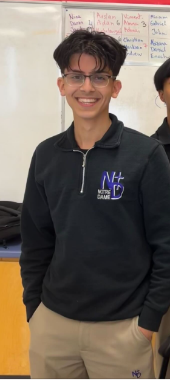

Daniel Singh

Summary
I am a hardworking, curious, and diligent student who would like to pursue a career that merges the areas of mathematics and computer science.
Education
- Notre Dame Catholic Secondary School, Ajax, Ontario (2021-2025)
- Durham Catholic Virtual Elementary School (Online) (2020-2021)
- St. Josephine Bakhita Catholic Elementary School, Ajax, ONT (2013-2020)
- Lincoln Alexander Public School, Ajax, Ontario (2011-2013)
Skills
- Mathematical Thinking Skills
- Hardworking
- Piano (see more)
- Direct
- Ambitious
- Logical
Experience
- Tutor at the Academy for Mathematics and English @ 3930 Brock St N Unit C3, Whitby, ON L1R 3E1
- Taught younger students the fundamentals of mathematics and English, keep students on task, set up material for class, cleaned up the area after class.
Excellence
- Numeracy Award – Durham Catholic Virtual Elementary School
- Completion of the Royal Conservatory of Music Piano and Music Theory Program
- Finalist of the Ontario Music Festivals Association Open-Level competition
- Honour Roll on Pascal Contest and Fryer Contest (from the University of Waterloo’s Centre of Education for Mathematics and Computing).
- Winner of the Durham Elementary School chess competition in 2019
- Certificate for Participation, Distinction and for Highest Score in School on Pascal Contest and Fryer Contest
- Average of 98 in the 2021-2022 school year at Notre Dame Catholic Secondary School
Contact